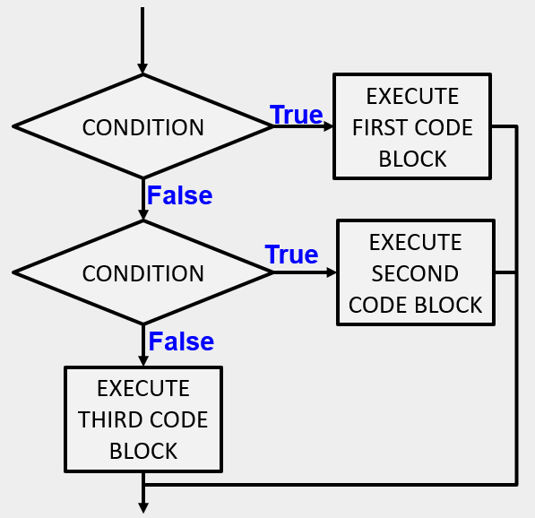

Python provides an alternative way to write nested selection such as the one shown in the previous section. This is sometimes referred to as a chained conditional.
if x < y:
print("x is less than y")
elif x > y:
print("x is greater than y")
else:
print("x and y must be equal")
The flow of control can be drawn in a different orientation but the resulting pattern is identical to the one shown above.

elif is an abbreviation of else if.
Again, exactly one branch will be executed. There is no limit
of the number of elif statements
but only a single (and optional) final else statement
is allowed and it must be the last branch in the statement.
Each condition is checked in order. If the first is False,
the next is checked, and so on. If one of them is True,
the corresponding branch executes, and the statement ends. Even if more than one condition is True,
only the first True branch executes.
Here is the same program using elif.
© Copyright 2018 LTC Tom Babbitt, Kyle King, Chip Schooler, Brad Miller, David Ranum, Originally created using Runestone Interactive.